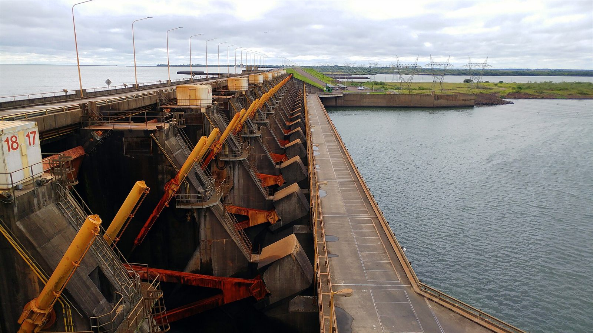

¿Cómo funciona la energía hidroeléctrica?
Todo arranca con un principio físico sencillo: el agua que está arriba tiene energía potencial que se transforma en energía cinética cuando cae. La hidroeléctrica convierte esa caída en movimiento, y el movimiento en electricidad. Paso a paso:
Un muro de hormigón corta el río y crea un embalse. El agua queda almacenada a una cierta altura: esa altura (el "salto") es la que guarda la energía.
Al abrir las compuertas, el agua desciende por conductos a gran presión hasta la sala de máquinas, ganando velocidad.
El chorro de agua golpea las palas de una turbina (tipo Pelton si cae de mucha altura, Francis o Kaplan si cae de poca). La turbina se convierte en la rueda motriz de toda la central.
La turbina está acoplada a un generador: un conjunto de imanes y bobinas. Al girar, el campo magnético induce corriente eléctrica en las bobinas (principio de inducción de Faraday).
Un transformador eleva el voltaje y la electricidad viaja por líneas de alta tensión hasta las ciudades. El agua que ya pasó por la turbina vuelve al río, aguas abajo.
La potencia que puede entregar una central depende del caudal (cuánta agua pasa por segundo) y del salto (desde qué altura cae):
Por eso las mejores ubicaciones son ríos caudalosos y con desnivel: en la Patagonia y el litoral argentino se dan las dos cosas a la vez.
Ubicación en Argentina
Las represas argentinas se concentran en dos regiones: la cuenca del Plata (ríos Paraná y Uruguay, al noreste) y el Comahue (ríos Limay y Neuquén, en el norte de la Patagonia). Los nombres más importantes:
Binacional con Paraguay y la más grande del país: aporta por sí sola alrededor del 10% de la electricidad argentina.
Compartida con Uruguay, sobre el salto que da nombre a la ciudad entrerriana de Concordia.
Complejo en el río Limay (Neuquén), uno de los motores históricos del desarrollo patagónico.
También sobre el Limay, aguas arriba de El Chocón, sumadas a las del río Santa Cruz y Comahue.

En conjunto, las represas suelen aportar alrededor de una cuarta parte de la electricidad argentina, y en años lluviosos esa cifra trepa muy por encima. Es la fuente limpia de mayor participación en el país.
Potencia generada y rol en la matriz
La potencia instalada de la hidroeléctrica argentina ronda los 9.000 – 10.000 MW, repartidos en más de 150 centrales, desde los gigantes binacionales hasta las mini centrales (< 50 MW) que también cuentan como renovables.
3.200 MW de potencia instalada; la mayor del país junto con las del complejo Comahue.
1.200 MW sumando las cuatro usinas del río Limay (El Chocón, Arroyito, Piedra del Águila, Alicurá).
Su rol en el sistema es doble: es energía de base cuando hay agua de sobra y, gracias a los embalses, también es un respaldo flexible: se puede subir o bajar la generación abriendo y cerrando compuertas, algo que eólica y solar no pueden hacer.
La hidroeléctrica es la fuente que más fluctúa con el clima: en años secos su generación cae a la mitad, y entonces las centrales térmicas (gas) tienen que cubrir el hueco. Por eso el porcentaje "~25%" de la matriz es un promedio: en la práctica oscila año a año.
Ventajas y desventajas
- ✦ Casi sin emisiones: 4–30 g CO₂/kWh, comparable con eólica y nuclear.
- ✦ Controlable: se enciende y apaga rápido con las compuertas.
- ✦ Larga vida útil (décadas) y bajo costo de operación.
- ✦ El embalse también permite regulación del río, riego y reserva de agua.
- ✦ Depende de las lluvias: las sequías reducen su generación.
- ✦ Impacto ambiental: inunda valles, ecosistemas y tierras productivas.
- ✦ Poblaciones relocalizadas (caso emblemático: Yacyretá).
- ✦ Inversión inicial enorme y plazos de construcción largos.
En la matriz del futuro la hidro sigue siendo clave como respaldo de la eólica y la solar: cuando el viento amaina o cae la noche, las represas pueden cubrir la demanda en minutos. Para comparar esta fuente con las demás, volvé al mapa de todas las fuentes.
Modelo 3D interactivo
Explorá una central hidroeléctrica de embalse en 3D: la presa, la casa de máquinas, el río, el pueblo y las compuertas. Abrí y cerrá las compuertas para observar cómo cambian el caudal, la potencia generada y el movimiento de la turbina. Recorré la escena desde distintos ángulos.
La escena representa el funcionamiento general de una represa y permite relacionar la energía potencial del agua con su transformación en energía eléctrica.
Conceptos Clave
- ✦ La hidroeléctrica convierte la caída del agua en giro de turbina y luego en electricidad: \(P = \rho g Q h\).
- ✦ Ubicación clave: río Paraná (Yacyretá), río Uruguay (Salto Grande) y río Limay (El Chocón, Piedra del Águila, Alicurá).
- ✦ Aporta ~25% de la matriz; es la principal fuente limpia y a la vez un respaldo flexible.
- ✦ Gran ventaja: controlable y sin emisiones. Gran límite: depende de las lluvias y tiene alto impacto ambiental.